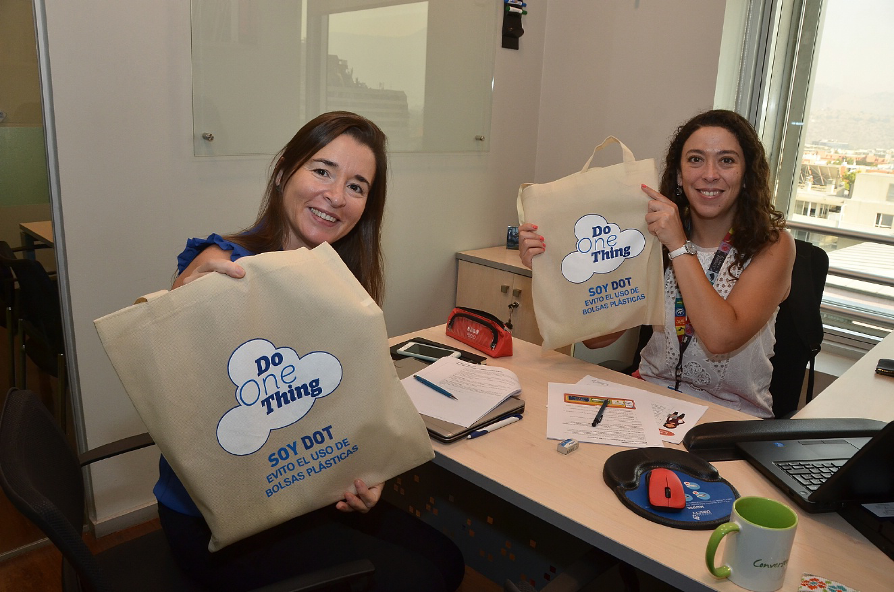

Marcelo Mena, ministro de Medioambiente.
“Este programa es muy importante para transformar nuestras escuelas en espacios vivos de educación”.
Agente comunales
aliados para conectar poblaciones.
Concluimos el proyecto Sembrando vida, niños como agentes de cambio, que nos ayudó a vencer dificultades geográficas y culturales, para potenciar la educación infantil.
Esta iniciativa fue un trabajo en conjunto con los Agentes Comunales, microempresarios y distribuidores autorizados por DIRECTV Chile, que prestan servicios en las comunas que están alejadas de los centros urbanos, y además, nos permiten ampliar la ayuda social.
¡En 2017 extendimos la cobertura de nuestros agentes a la II Región de Antofagasta!

CONECTAMOS
INICIATIVAS
Los Agentes Comunales son verdaderos microemprendedores. La alianza con ellos nos ayudó llegar a las escuelas más alejadas.
COMPROMISOS
Valores ambientales, educación, cultura local y colaboración son solo algunos de los logros obtenidos con este proyecto.
Voluntariados
con los que llegamos lejos
Trabajamos en distintas acciones del programa regional de voluntariado Piedra, Papel, Tijera que nos permitieron transformar la infraestructura y conectividad en distintos sectores.
En El Canelo, Coquimbo, nos aliamos con la Fundación Junto al Barrio, para construir un espacio de encuentro para los vecinos. Además, en Coaniquem, renovamos la fachada de la Corporación de Ayuda al Niño Quemado junto a 30 voluntarios, para mejorar la estadía de los internados.

CONECTAMOS
CAMBIOS
El programa regional de voluntariado Piedra, Papel, Tijera nos permite realizar obras en escuelas, orfanatos, hogares y mejorar la calidad de vida de muchas personas.
ALIADOS
Unimos nuestros esfuerzos con los de Fundación Junto al Barrio, Corporación de Ayuda al Niño Quemado, Hogar Rosita Reinard San Bernardo y Centro Ocupacional Hortiterapéutico FONDACIO, entre otras organizaciones.

Sumamos nuestra experiencia
al II Congreso Escuela+
La relación entre las tecnologías y la educación fue el principal tema del II Congreso Iberoamericano de Escuela+
que se realizó en Buenos Aires, Argentina. Participaron de la cita académicos, autoridades políticas de diversos países, representantes de los socios estratégicos del programa educativo y docentes en general.
Junto al equipo de DIRECTV Chile, seis profesores integraron un panel sobre buenas prácticas educativas empleando contenidos televisivos y audiovisuales. Asistieron también supervisoras de la región de Aysén que compartieron su experiencia con el programa del que DIRECTV es socio.
CONECTAMOS
PERSONAS
Implementamos el envío de encuestas a todas las escuelas de Chile que cuentan con los recursos del programa Escuela+, un seguimiento que comenzó a realizarse cada tres meses.
TECNOLOGÍA
Lanzamos en la región y en Chile la App de Escuela+ para teléfonos inteligentes que facilita a los docentes el uso de los materiales del programa educativo.
Participamos de
un movimiento global
Nos unimos a una iniciativa de AT&T que invita a hacer pequeños cambios en la vida, acciones que benefician a cada persona de la compañía y al entorno.
DOT (Do One Thing), que significa “haz tu parte”, es una campaña en la que cada acción cuenta para generar impactos positivos en la vida de una persona, una comunidad o una compañía.

CONECTAMOS
IMPACTOS
AT&T lanzó DOT para crear conciencia sobre lo que significa la sostenibilidad. Abarca desde el voluntariado hasta el reciclaje, desde el uso de la tecnología de la empresa de maneras innovadoras, hasta la vida más saludable.
IDEAS

En la primera etapa de las campañas, nuestros colaboradores fueron convocados para proponer las acciones a implementar.